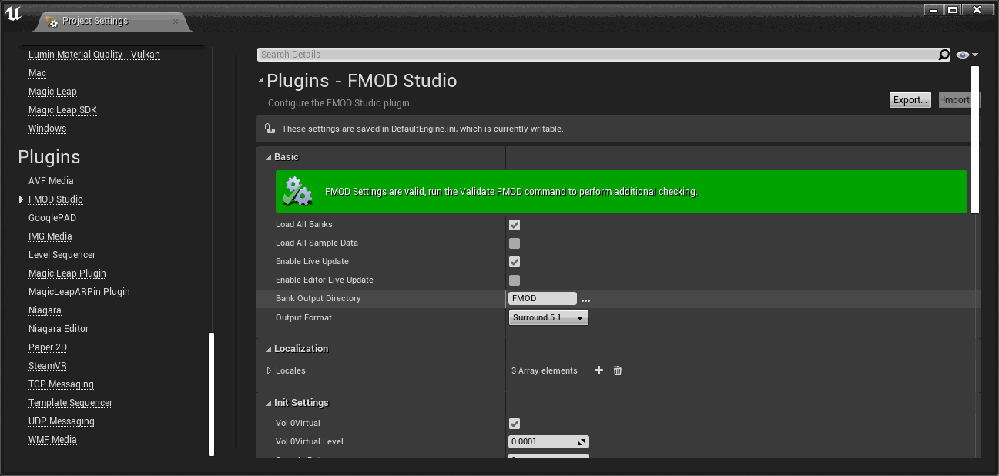

Unreal Integration 2.02
FMOD For Unreal adds a number of configuration options to the Project Settings editor.
Access the settings by opening the Project Settings editor from the Edit menu, then navigate to the FMOD Studio plugin settings:

All of the settings are stored in the default engine configuration file and can be manually edited there if desired.
When enabled the metadata from all FMOD bank files is loaded at startup.
Default: Enabled
When enabled the sample data from all FMOD bank files is loaded at startup. Only effective when Load All Banks is also enabled.
Default: Disabled
When enabled FMOD Studio Live Update can connect to non-final builds of the game while running.
Default: Enabled
When enabled FMOD Studio Live Update can connect to the editor.
Default: Disabled
Path to the FMOD Studio built banks output directory, relative to the project's Content directory. See Studio Bank Output Directory in the user guide for more information.
Default: FMOD
Project output format, this should match the FMOD Studio project Surround Speaker Mode.
Default: Surround_5_1
Built-in output types that can be used to run the mixer.
Default: TYPE_AUTODETECT
List of project locales. This should match the locales configured for the FMOD Studio project. See Localization in the user guide for more information.
Each entry in the list has three members:
When loading banks, banks which correspond to the active locale are loaded while banks which correspond to any other recognized locale are skipped.
Sets the signal level at which Channels are virtualized. This corresponds directly to the vol0virtual member of FMOD_ADVANCED_SETTINGS in the Core API.
Default: 0.0001
The sample rate for the FMOD mixer. This corresponds to the samplerate parameter of FMOD::System::setSoftwareFormat in the Core API.
Default: 0 (uses the default sample rate for the platform)
When enabled attempt to match the sample rate for the FMOD mixer with the output driver's sample rate.
Default: Enabled
The maximum number of active Channels. This corresponds to the numsoftwarechannels parameter of FMOD::System::setSoftwareChannels in the Core API.
Default: 64
The maximum number of Channels to be used in FMOD. This corresponds to the maxchannels parameter of FMOD::Studio::System::initialize in the Studio API.
Default: 512
The mixer block length for the FMOD mixer. This corresponds to the bufferlength parameter of FMOD::System::setDSPBufferSize in the Core API.
Units: samples
Default: 0 (uses the default DSP buffer length for the platform)
The number of mixer blocks for the FMOD mixer to use. This corresponds to the numbuffers parameter of FMOD::System::setDSPBufferSize in the Core API.
Default: 0 (uses the default DSP buffer count for the platform)
File buffering chunk size. This corresponds to the blockalign parameter of FMOD::System::setFileSystem in the Core API.
Units: bytes
Default: 2048
Update period of FMOD Studio. This corresponds to the studioupdateperiod member of FMOD_STUDIO_ADVANCEDSETTINGS in the Studio API.
Units: milliseconds
Default: 0 (uses the default update period for FMOD Studio)
Name of output driver to choose at start up. If this is not empty the available output drivers are enumerated at start up and if a driver with a matching name is found then that driver is selected for output.
Default: Empty (uses the default output driver)
When enabled all buses in the global mixer are locked when the master bank is loaded. This ensures that all buses in the global mixer are created.
Default: Disabled
Size of memory pool to use on each platform. When this is set to a value other than zero a memory pool of the requested size is allocated using the Unreal memory system and all FMOD memory allocations are made from the pool. Otherwise FMOD memory allocations directly use the Unreal memory system.
Units: bytes
Default: 0
TCP port to listen on for FMOD Studio Live Update connections when running non-final builds of the game.
Default: 9264
TCP port to listen on for FMOD Studio Live Update connections when running the editor.
Default: 9265
Delay before automatically reloading modified banks from disk. This can be extended if building banks takes a long time and Unreal tries to reload banks before building is completed. Set to 0 to disable automatic bank reloading.
Units: seconds
Default: 5
Will log internal API errors when enabled.
Default: Disabled
Enables FMOD's detailed memory tracking for non-final builds. This corresponds to setting the FMOD_STUDIO_INIT_MEMORY_TRACKING flag into the studioflags when initializing the Studio API.
Default: Disabled
List of FMOD Studio plugins to be loaded when the system starts up. See Plugins for more information.
Root directory for FMOD assets.
Default: /Game/FMOD
Override platform name for loading banks at runtime.
Default: Empty (use default platform name)
Name of master bank (without extension). Must match the FMOD Studio project.
Default: Master
String to filter banks loaded when Load All Banks is enabled. If Skip Load Bank Name is not empty then any bank with a name containing the specified string will be skipped by automatic bank loading.
Default: Empty
Key for loading encrypted banks. This corresponds to the encryptionkey member of FMOD_STUDIO_ADVANCEDSETTINGS in the Studio API.
File name that the wav writer will output to. If this is not empty then the runtime FMOD Studio system will use FMOD_OUTPUTTYPE_WAVWRITER and the mixed audio produced by FMOD will be sent to the specified file. There will be no audible output when using this setting.
Default: Empty
Logging level for non-final builds. The logging levels correspond to the similarly named FMOD_DEBUG_LEVEL_XXX flags used by the FMOD::Debug_Initialize function in the Core API.
Default: LEVEL NONE
Name of event parameter to automate using Unreal occlusion ray casts. See Occlusion Settings for more information.
Default: Empty
Name of event parameter to automate using Unreal ambient zone volume settings. See Ambient Zone Settings for more information.
Default: Empty
Name of event parameter to automate using Unreal ambient zone LPF settings. See Ambient Zone Settings for more information.
Default: Empty
Used to specify individual settings for different platforms.
Name of the platform.
The maximum number of active channels. This corresponds to the numsoftwarechannels parameter of FMOD::System::setSoftwareChannels in the Core API.
Default: 64
The sample rate for the FMOD mixer. This corresponds to the samplerate parameter of FMOD::System::setSoftwareFormat in the Core API.
Default: 0 (uses the default sample rate for the platform)
Project output format, this should match the FMOD Studio project Surround Speaker Mode.
Default: Surround_5_1
Built-in output types that can be used to run the mixer.
Default: TYPE_AUTODETECT
Size of memory pool to use. When this is set to a value other than zero a memory pool of the requested size is allocated using the Unreal memory system and all FMOD memory allocations are made from the pool. Otherwise FMOD memory allocations directly use the Unreal memory system.
Units: bytes
Default: 0
Specifying one or more of the codec maximums will help determine the maximum CPU usage of playing FMOD_CREATECOMPRESSEDSAMPLE Sounds of that type as well as the memory requirements.
As well as settings exposed by FMOD For Unreal you will need to add the directory containing the FMOD bank files to the Additional Non-asset Directory To Copy setting in Unreal's Project - Packaging settings. The FMOD Studio settings UI will prompt you to update this setting if it is not correctly configured. See Packaging banks in the user guide for more information.